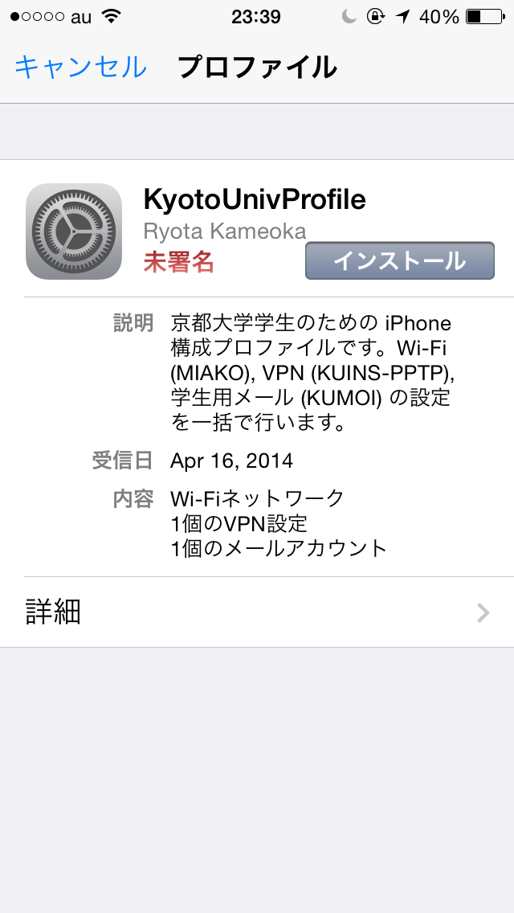
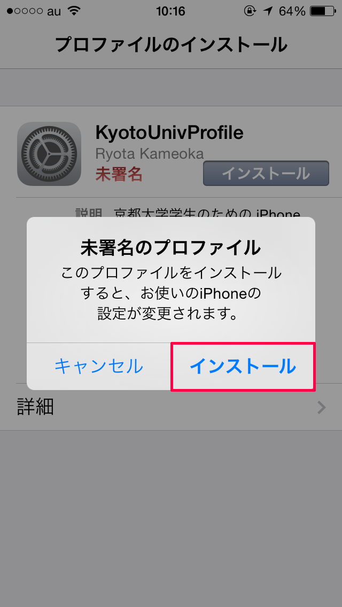
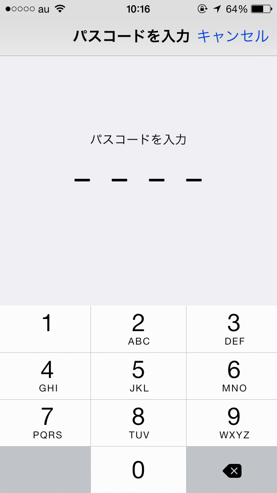
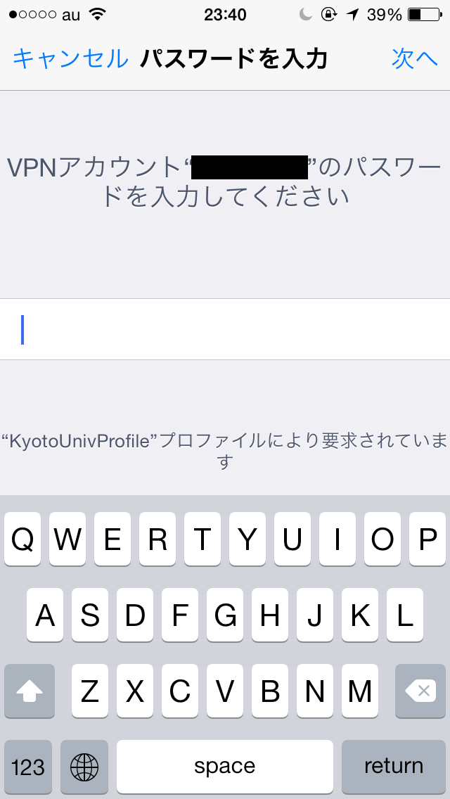
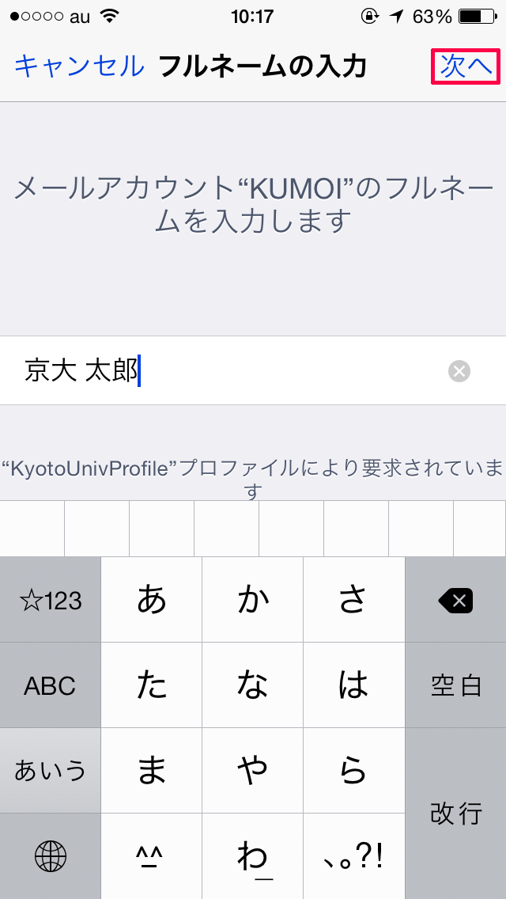
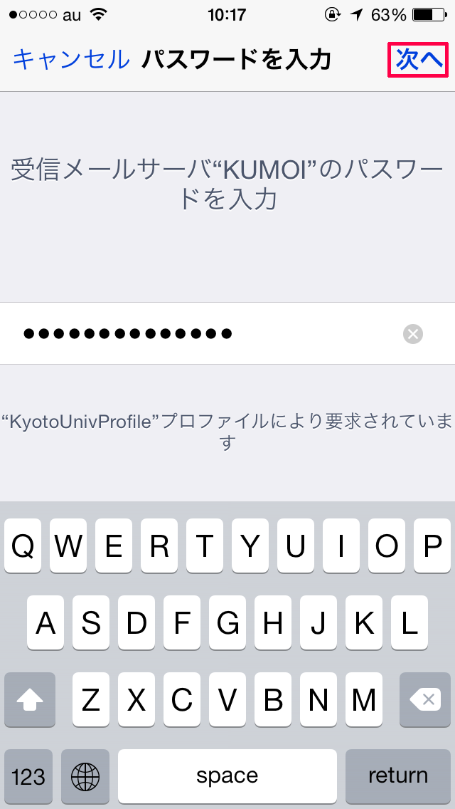
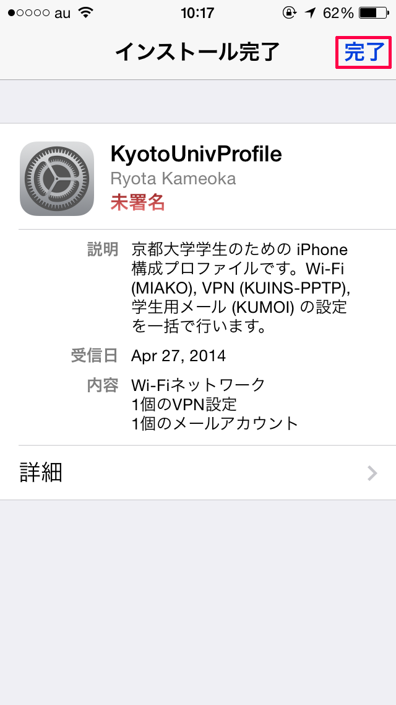

「インストール」ボタンをタップします。
「インストール」をタップします。
iPhone にパスコードロックがかかっている場合、パスコードを入力します。
ECS-ID のパスワードを入力します。
メール(KUMOI)での表示名を入力します。
Step 4 と同じパスワードを入力します。
完了ボタンを押してインストールは完了です。
ホーム画面から 設定 > Wi-Fi を開き、"MIAKO" を選択します。
その後 設定 > 一般 > VPN を開き、KUINS-PPTP が選択されていることを確認し、VPN をオンにします。
入力されたすべての情報は、iPhone 構成プロファイルの作成のみに使用され、サーバーに保存されたり、第三者に情報が送信されることはありません。
このアプリケーションは一個人が開発したものであり、京都大学当局とは一切関係ありません。
このアプリケーションを使用することによって生じた、いかなる損害についても、製作者はその責任を負いかねますので、あらかじめご了承ください。